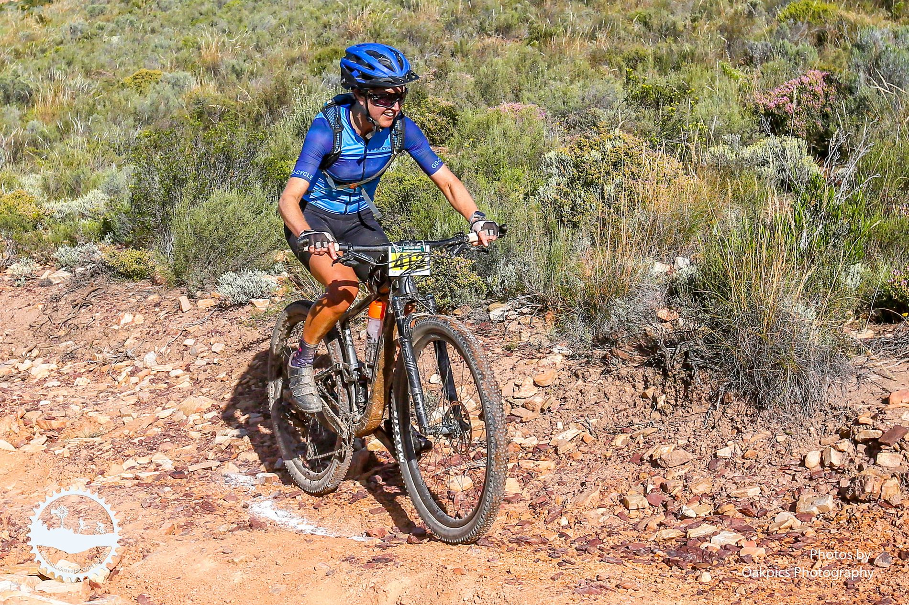
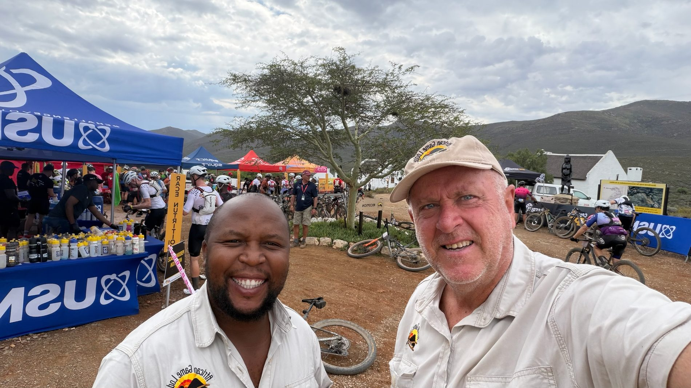

Activities
Mountain Biking
Endless jeep tracks and stunning scenery for cyclists who love nature.
Endless jeep tracks and stunning scenery for cyclists who love nature.
Montagu is becoming a key mountain bike destination of choice. Our endless jeep tracks and stunning scenery are perfect for mountain biking enthusiasts who enjoy exploring nature.
At African Game Lodge you can safely cycle on the reserve, follow game or birding trails, and use the lodge as a base to cycle through Montagu, the Koo Valley and Route 62 towards Barrydale.


